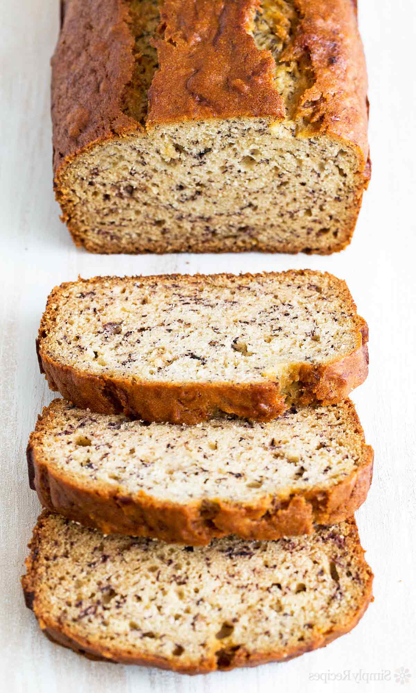
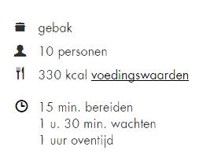

Bananenbrood


Nationale Bananenbrood dag is op 23 Februari. Bananen verschenen in de VS in de jaren 1870 en het duurde een tijdje voor dat ze daadwerkelijk gebruikt werden als ingredient. Het bananenbrood recept werd gepubliceerd in kookboeken rond de jaren 1930 en de populariteit is enorm geholpen door de introductie van bakpoeder op de markt. Wat historici denken dat bananenbrood een bijproduct was van de Grote Depressie wanneer vindingrijke huisvrouwen geen overrijpe bananen wilde weggooien (toen waren de bananen nog best prijzig om aan te schaffen), anderen geloven dat het bananenbrood werd ontwikkeld in collectieve keukens om bloem te bevorderen en zuiveringszout producten.
Stap voor Stap koken 2 tl bakpoeder
2 tl bakpoeder 1 tl gemalen kaneel
1 tl gemalen kaneel 1 mespunt zout
1 mespunt zout 300 g bananen
300 g bananen 100 g boter
100 g boter 200 g witte basterdsuiker
200 g witte basterdsuiker 8 g vanillesuiker
8 g vanillesuiker 2 eieren
2 eieren 125 ml crème fraîche (bekertje)
125 ml crème fraîche (bekertje)
Verwarm de oven voor op 180 °C. Vet de cakevorm in en bekleed met bakpapier.
Zeef in een grote kom de bloem, bakpoeder, kaneel en het zout. Pel en prak de banaan. Meng de boter, basterd- en vanillesuiker in de keukenmachine in 20 sec. tot een bijna glad mengsel. Laat draaien en voeg 1 voor 1 de eieren en de crème fraîche toe. Schep door het bloemmengsel.
Schep de bananenpuree door het beslag. Verdeel over de cakevorm en bak in ca. 1 uur goudbruin en gaar. Controleer na 50 min. op gaarheid met de satéprikker. Komt deze er schoon uit, dan is de cake gaar. Laat 30 min. afkoelen, neem uit de vorm en laat in 1 uur verder afkoelen op een rooster.